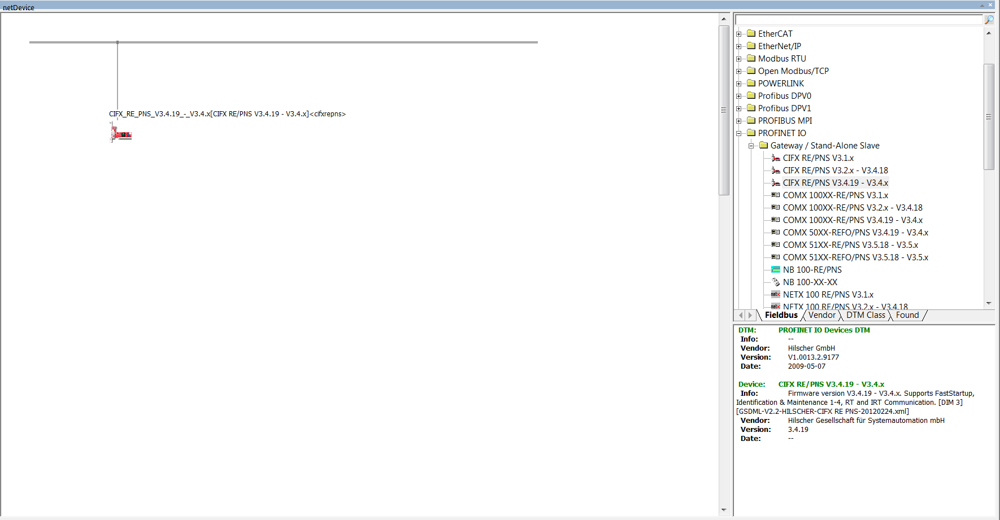
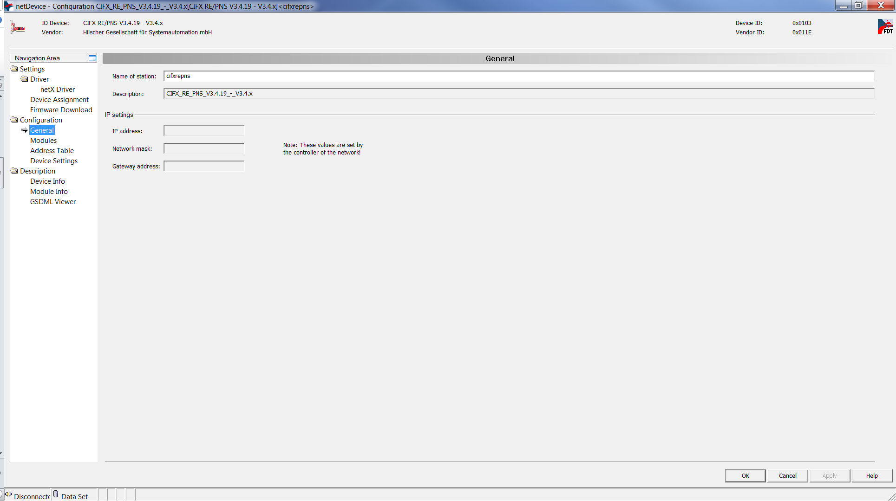
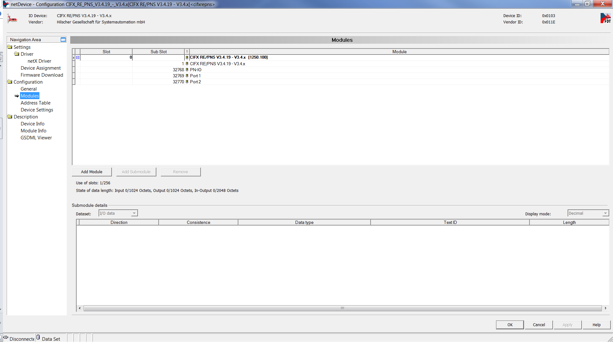
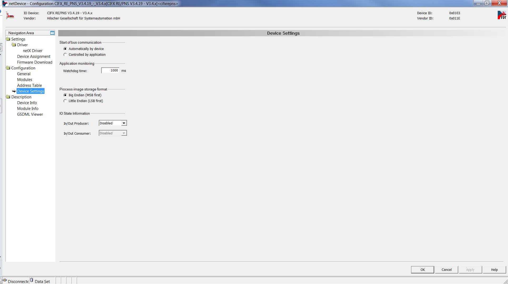
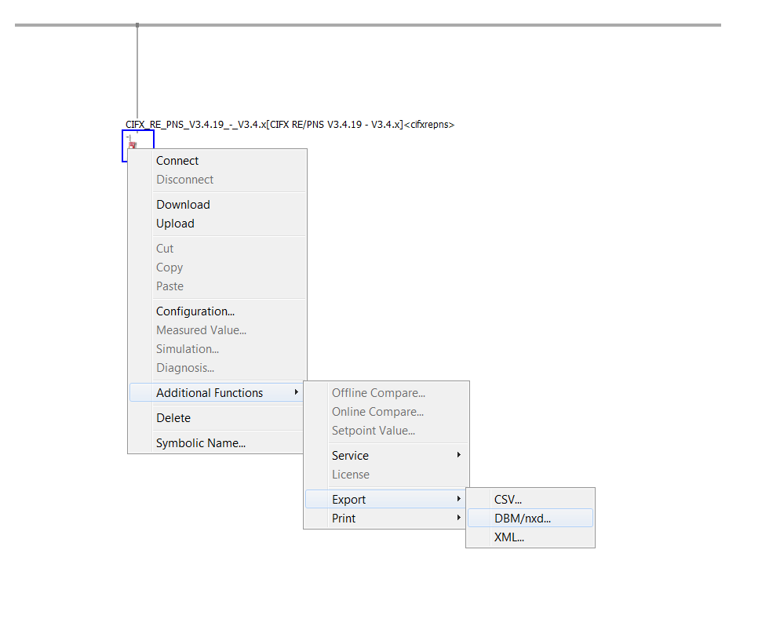

IO752 Usage Notes
IO752 Usage Notes — Usage information about the I/O module
GSDML File
To set up PROFINET communication, you must import the device description files of PROFINET devices (GSDML file) into your PROFINET controller configuration tool or PLC programming tool (refer to Step 7). Find the GSDML file of the IO752 PROFINET Device module here:
>> [speedgoatroot, '\sg_blocks\cifx\eds\GSDML-V2.33-HILSCHER-CIFX RE
PNS-20170919.xml'].
This GSDML file contains multiple Device Access Points. Always select CIFX RE/PNS V3.5.35 - V3.x.
If you use warmstart parameters to simulate a PROFINET device of a different vendor, you must import the GSDML file of that particular device into your controller configuration tool. The GSDML file is generally available on the vendor's website.
I/O Module configuration from Simulink
The warmstart mode allows the PROFINET device to be configured in Simulink using the Setup driver block.
This approach offers more options than Sycon.net and rules out having to generate and handle configuration files.
I/O Module configuration with SYCON.net
During initialization of the real-time application, the IO752 Setup block reads a configuration file from the hard drive of the target machine and configures the PROFINET Device protocol stack. Use the SYCON.net configuration tool to create such a file.
![[Tip]](images/tip.png) | Tip |
|---|---|
Download the SYCON.net configuration tool from the Speedgoat Customer Portal. Login to your Speedgoat account. In the Downloads section, navigate to Software and click SYCON.net (v1.400 Build 170125). |
![[Note]](images/note.png) | Note |
|---|---|
Only SYCON.net V1.400 Build 170125 has been tested. There is no guarantee therefore that other versions will work with the Speedgoat I/O Blockset. |
In addition to this short introduction, please read the SYCON.net help documentation for detailed information about how to set up a PROFINET device and export the module configuration file.
Open SYCON.net and locate the "CIFX RE/PNS" device. Drag and drop the device to the main panel and also add the required PROFINET devices for a complete fieldbus network configuration.

Double-click on the icon to open the Configuration window of the controller.
Go to Configuration and then General. These are the parameters that you can use to setup the PROFINET device name.

Go to Configuration and then Modules. These are the parameters that you can use to setup the PROFINET device input and output ports.

Go to Configuration and then device Settings. These are the parameters that you can use to setup the PROFINET device.

Apply the configuration and close the windows. Right-click on the controller icon and select Additional Functions, Export and then DBM/nxd.

Select a name for the file, for example, "my_device.nxd" and save.
In MATLAB, locate the file and use the following script to load the configuration to the target machine.
IO752 = sg_IO75X_struct(); % Define default structure IO752.protocol = 'IO752'; % Protocol Speedgoat ID IO752.cardid = '1'; % Card ID as defined in the model IO752.configfiles = '2'; % Number of configuration files IO752.configPath = 'C:\Tests\Profinet'; % Absolute file path or '' for current directory IO752.configfile1 = 'my_device.nxd'; % Name of first configuration file IO752.configfile2 = 'my_device_nwid.nxd'; % Name of second configuration file sg_IO75X_loadconfig(IO752);
Note When using v2 blocks, the protocol must be set to "IO752_V2".
IO752 = sg_IO75X_struct(); % Define default structure IO752.protocol = 'IO752_V2'; % Protocol Speedgoat ID IO752.cardid = '1'; % Card ID as defined in the model IO752.configfiles = '2'; % Number of configuration files IO752.configPath = 'C:\Tests\Profinet'; % Absolute file path or '' for current directory IO752.configfile1 = 'my_device.nxd'; % Name of first configuration file IO752.configfile2 = 'my_device_nwid.nxd'; % Name of second configuration file sg_IO75X_loadconfig(IO752);
Configure the driver blocks according to the configuration defined in SYCON.net. In the Setup driver block select "Configuration mode: Configuration file".
When you build the model, the firmware and configuration are loaded to the IO752 PROFINET device I/O module.
Front Plate Description
The IO752 acts as one PROFINET Device exclusively. The two RJ45 connectors simply serve to build up a line-based network structure. Plug the cable from the PROFINET Controller or the previous Device into the first socket. Connect the second socket with the next PROFINET Device. The LEDs described below indicate the communication status of the single PROFINET Device.


The IO752-32 simulates 32 PROFINET Device nodes, split into two clusters with 16 protocol chips each. Within a cluster, the nodes represent a line-based network structure. Build up a combined network by connecting both center sockets. Each node has two LEDs that indicate the communication status.

LED Status Description
| LED | Color | State | Meaning |
| SYS | Green | On | Operating system running |
| Green/Yellow | Blinking | Second stage bootloader is waiting for firmware | |
| Yellow | On | Bootloader netX (= romloader) is waiting for second stage bootloader | |
| Off | Off | Power supply for the device is missing or hardware defect | |
| SF/COM1 | Off | Off | No error |
| Red | Flashing (1 Hz, 3 s) | DCP signal service is initiated via the bus | |
| Red | On | Watchdog timeout; channel, generic or extended diagnosis present; system error | |
| BF/COM2 | Off | Off | No error |
| Red | Flashing (2 Hz) | No data exchange | |
| Red | On | No configuration; or low speed physical link; or no physical link |
Note that only the IO752 PCI and PCIe modules have the SYS LED. This LED does not feature on the IO752 mPCIe module and the IO752-32 multi-node simulator.
Status Codes
For the list of status codes, please refer to Status Codes for Protocols Supported with the IO64x/IO75x Modules.